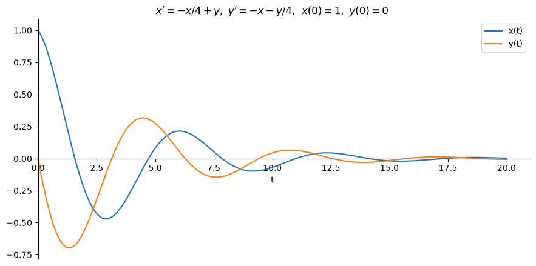
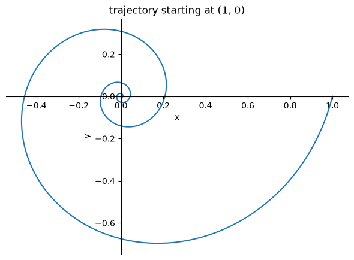
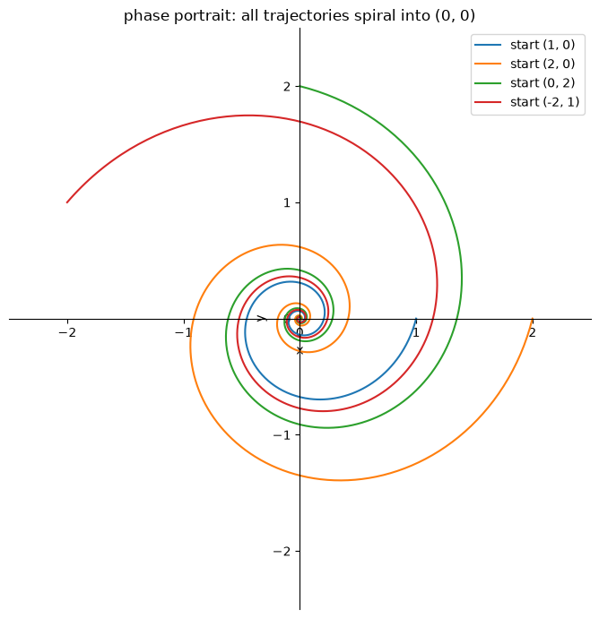
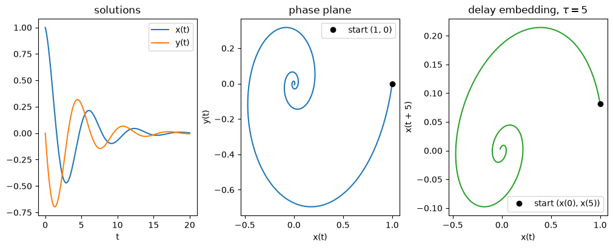
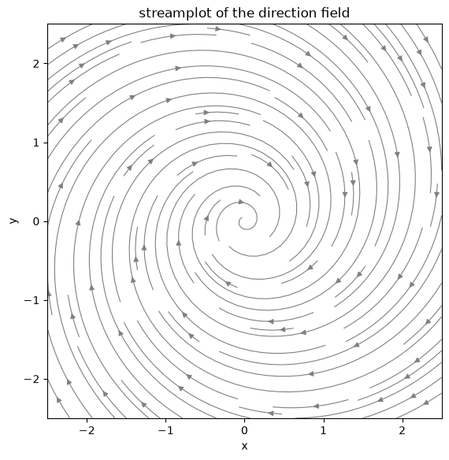
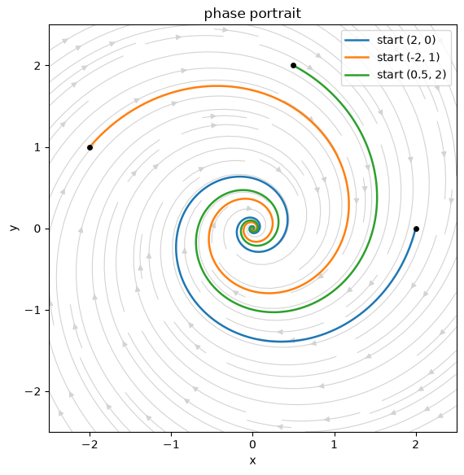
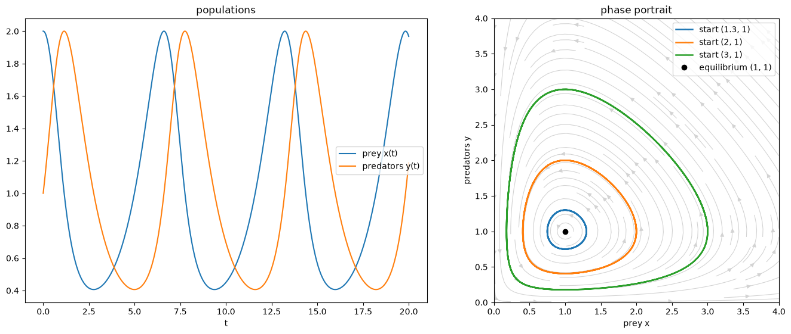

Systems of differential equations and phase portraits#
A system of two first-order ODEs has two unknown functions \(x(t)\), \(y(t)\): $\( x'(t) = f\big(t, x(t), y(t)\big), \qquad y'(t) = g\big(t, x(t), y(t)\big), \qquad x(t_0) = x_0, \quad y(t_0) = y_0. \)$ Each equation can contain both unknowns, so the equations must be solved together. We need one initial condition per unknown.
import numpy as np
import matplotlib.pyplot as plt
import sympy as sp
from scipy.integrate import solve_ivp
t = sp.symbols("t")
x = sp.Function("x") # unknown function x(t)
y = sp.Function("y") # unknown function y(t)
Part 1. Solving a system with SymPy#
We solve $\( x'(t) = -\tfrac14 x(t) + y(t), \qquad y'(t) = -x(t) - \tfrac14 y(t), \qquad x(0) = 1, \quad y(0) = 0. \)$
Step 1: write the equations#
Same as for one equation, but now there are two unknown functions and two equations, collected in a list.
As before, use exact numbers: x(t)/4, not 0.25*x(t).
eqs = [sp.Eq(x(t).diff(t), -x(t)/4 + y(t)),
sp.Eq(y(t).diff(t), -x(t) - y(t)/4)]
eqs
[Eq(Derivative(x(t), t), -x(t)/4 + y(t)),
Eq(Derivative(y(t), t), -x(t) - y(t)/4)]
Step 2: solve the initial value problem#
sp.dsolve accepts the list of equations. The initial conditions go in ics=, one for each unknown.
The answer is a list: sol[0] is the equation for \(x(t)\) and sol[1] the equation for \(y(t)\). Their right sides are sol[0].rhs and sol[1].rhs.
sol = sp.dsolve(eqs, ics={x(0): 1, y(0): 0})
X, Y = sol[0].rhs, sol[1].rhs
display(sol[0], sol[1])
Both functions are a decaying factor \(e^{-t/4}\) times an oscillation (\(\cos t\), \(\sin t\)).
Step 3: check the answer#
Always check. sp.checkodesol works for systems too: it returns (True, [0, 0]), one zero per equation.
print("checkodesol:", sp.checkodesol(eqs, sol))
print("x(0) =", X.subs(t, 0), " y(0) =", Y.subs(t, 0))
checkodesol: (True, [0, 0])
x(0) = 1 y(0) = 0
Step 4: plot \(x(t)\) and \(y(t)\) with sp.plot#
SymPy can plot its formulas directly, without lambdify:
sp.plot(expr1, expr2, (t, t_start, t_end))
Several expressions in one call give several curves in one picture.
sp.plot(X, Y, (t, 0, 20),
legend=True, label=["x(t)", "y(t)"],
xlabel="t", ylabel="",
title=r"$x' = -x/4 + y,\ y' = -x - y/4$, $x(0) = 1,\ y(0) = 0$",
size=(9, 4.5));

Both \(x(t)\) and \(y(t)\) oscillate and die out. (The ; at the end stops Jupyter from printing the plot object.)
Step 5: the phase plane with sp.plot_parametric#
Forget the time axis: at each time \(t\), plot the point \(\big(x(t), y(t)\big)\). As \(t\) runs, the point moves along a curve in the \(xy\)-plane, the phase plane. This curve is a trajectory.
A curve given by \(\big(x(t), y(t)\big)\) is a parametric curve:
sp.plot_parametric((x_expr, y_expr, (t, t_start, t_end)))
sp.plot_parametric((X, Y, (t, 0, 20)),
xlabel="x", ylabel="y",
title="trajectory starting at (1, 0)",
aspect_ratio=(1, 1), size=(6, 6));

The point starts at \((1, 0)\), turns clockwise and spirals into \((0, 0)\).
Step 6: several trajectories#
Different initial values give different trajectories. We solve the IVP for several starting points and give all curves to one plot_parametric call. The picture of many trajectories is the phase portrait.
starts = [(1, 0), (2, 0), (0, 2), (-2, 1)]
curves, labels = [], []
for x0, y0 in starts:
s = sp.dsolve(eqs, ics={x(0): x0, y(0): y0})
curves.append((s[0].rhs, s[1].rhs, (t, 0, 20)))
labels.append(f"start ({x0}, {y0})")
sp.plot_parametric(*curves, legend=True, label=labels,
xlabel="x", ylabel="y", title="phase portrait: all trajectories spiral into (0, 0)",
xlim=(-2.5, 2.5), ylim=(-2.5, 2.5),
aspect_ratio=(1, 1), size=(7, 7));

Every trajectory spirals into the origin: \((0, 0)\) is an equilibrium (there \(x'(t) = y'(t) = 0\)), and all solutions approach it.
Trajectories never cross: through each point passes exactly one solution.
*curves passes the list elements as separate arguments: plot_parametric(curve1, curve2, ...).
Part 2. Solving a system with SciPy#
For solve_ivp, a system is no harder than one equation. The unknown is now a vector \(u = \big(x(t), y(t)\big)\):
f(t, u)receivesuas an array: \(x\) isu[0], \(y\) isu[1];freturns the list of derivatives \([x'(t), y'(t)]\), in the same order;the initial value is the list
[x0, y0].
Part 2A. The system from Part 1#
Step 1: solve#
def F(t, u):
x, y = u
return [-x/4 + y, -x - y/4]
tt = np.linspace(0, 20, 401) # step 0.05
sol = solve_ivp(F, (0, 20), [1, 0], t_eval=tt, rtol=1e-10, atol=1e-12)
print("success:", sol.success)
print("shape of sol.y:", sol.y.shape)
success: True
shape of sol.y: (2, 401)
sol.y now has two rows: sol.y[0] is \(x(t)\) and sol.y[1] is \(y(t)\).
Step 2: check against the exact SymPy solution#
Here we do need lambdify: to compare numbers, we turn the SymPy formulas from Part 1 into NumPy functions.
X_num = sp.lambdify(t, X, "numpy")
Y_num = sp.lambdify(t, Y, "numpy")
err_x = np.max(np.abs(sol.y[0] - X_num(tt)))
err_y = np.max(np.abs(sol.y[1] - Y_num(tt)))
print(f"max error in x: {err_x:.1e} max error in y: {err_y:.1e}")
max error in x: 2.7e-11 max error in y: 2.7e-11
Step 3: plot \(x(t)\), \(y(t)\), the trajectory, and a delay embedding#
The third panel is a delay embedding. Suppose we could measure only one of the two functions, say \(x(t)\). Plot \(x(t)\) against the same function a fixed time \(\tau\) later, \(x(t + \tau)\). Here \(\tau = 5\).
The picture has the same shape as the true phase portrait in the middle panel: a spiral into \((0, 0)\). One measured variable is enough to see the behavior of the whole system. The embedded spiral is flatter, because \(x(t+5)\) has decayed by the extra factor \(e^{-5/4} \approx 0.29\); try a smaller \(\tau\), e.g. \(\tau = 1.5\). (This is the idea behind Takens’ theorem, used to study systems from measured data.)
In the code: tt has step \(0.05\), so \(\tau = 5\) is a shift of k = 100 points. The pairs \(\big(x(t), x(t+\tau)\big)\) are sol.y[0][:-k] (all but the last k values) and sol.y[0][k:] (all but the first k).
tau = 5
k = round(tau / (tt[1] - tt[0])) # shift in number of points
fig, axs = plt.subplots(1, 3, figsize=(10, 4), constrained_layout=True)
axs[0].plot(sol.t, sol.y[0], label="x(t)")
axs[0].plot(sol.t, sol.y[1], label="y(t)")
axs[0].set_xlabel("t"); axs[0].legend(); axs[0].set_title("solutions")
axs[1].plot(sol.y[0], sol.y[1])
axs[1].plot(1, 0, "o", color="k", label="start (1, 0)")
axs[1].set_xlabel("x(t)"); axs[1].set_ylabel("y(t)")
axs[1].legend(); axs[1].set_title("phase plane")
axs[2].plot(sol.y[0][:-k], sol.y[0][k:], color="tab:green")
axs[2].plot(sol.y[0][0], sol.y[0][k], "o", color="k", label=f"start (x(0), x({tau}))")
axs[2].set_xlabel("x(t)"); axs[2].set_ylabel(f"x(t + {tau})")
axs[2].legend(); axs[2].set_title(rf"delay embedding, $\tau = {tau}$")
plt.show()

Part 2B. The direction field with streamplot#
The system tells us the velocity of the point \(\big(x(t), y(t)\big)\) at every position, without solving anything: $\( \big(x'(t), y'(t)\big) = \big(-\tfrac14 x(t) + y(t),\ -x(t) - \tfrac14 y(t)\big). \)$ These velocity vectors on a grid form the direction field. Trajectories follow it.
Step 1: compute the velocities on a grid#
np.meshgrid makes a grid of points Xg, Yg. A useful trick: F(0, [Xg, Yg]) also works on the whole grid at once, so the same function gives the velocities U \(= x'\) and V \(= y'\) at every grid point.
xs = np.linspace(-2.5, 2.5, 21)
Xg, Yg = np.meshgrid(xs, xs)
U, V = F(0, [Xg, Yg])
print("grid shape:", Xg.shape, " velocity at (1, 0):", F(0, [1, 0]))
grid shape: (21, 21) velocity at (1, 0): [-0.25, -1.0]
Step 2: streamplot#
ax.streamplot(Xg, Yg, U, V) draws curves that follow the direction field: it looks like a picture of the trajectories.
Useful options:
density=1.5: more (or fewer) curves;color="gray",linewidth=0.8,arrowsize=1.2.
fig, ax = plt.subplots(figsize=(6.5, 6.5))
ax.streamplot(Xg, Yg, U, V, color="gray", density=1.2, linewidth=0.8)
ax.set_xlabel("x"); ax.set_ylabel("y"); ax.set_aspect("equal")
ax.set_title("streamplot of the direction field")
plt.show()

Step 3: the phase portrait: streamplot plus trajectories#
We put the streamplot in light gray and draw the solutions from several starting points on top.
fig, ax = plt.subplots(figsize=(6.5, 6.5))
ax.streamplot(Xg, Yg, U, V, color="lightgray", density=1.2, linewidth=0.8)
tt = np.linspace(0, 20, 500)
for x0, y0 in [(2, 0), (-2, 1), (0.5, 2)]:
s = solve_ivp(F, (0, 20), [x0, y0], t_eval=tt, rtol=1e-8)
ax.plot(s.y[0], s.y[1], lw=1.8, label=f"start ({x0}, {y0})")
ax.plot(x0, y0, "o", color="k", ms=4)
ax.set_xlim(-2.5, 2.5); ax.set_ylim(-2.5, 2.5); ax.set_aspect("equal")
ax.set_xlabel("x"); ax.set_ylabel("y"); ax.legend(loc="upper right")
ax.set_title("phase portrait")
plt.show()

Part 2C. A nonlinear system: predator and prey#
\(x(t)\) = prey (rabbits), \(y(t)\) = predators (foxes), in suitable units. SymPy finds no formula for this system, but for solve_ivp it is just another F.
def LV(t, u):
x, y = u
return [x - x*y, -y + x*y]
tt = np.linspace(0, 20, 800)
sol = solve_ivp(LV, (0, 20), [2, 1], t_eval=tt, rtol=1e-9, atol=1e-12)
xs = np.linspace(0.01, 4, 21)
Xg, Yg = np.meshgrid(xs, xs)
U, V = LV(0, [Xg, Yg])
fig, axs = plt.subplots(1, 2, figsize=(14, 5.5), constrained_layout=True)
axs[0].plot(tt, sol.y[0], label="prey x(t)")
axs[0].plot(tt, sol.y[1], label="predators y(t)")
axs[0].set_xlabel("t"); axs[0].legend(); axs[0].set_title("populations")
axs[1].streamplot(Xg, Yg, U, V, color="lightgray", density=1.2, linewidth=0.8)
for x0 in [1.3, 2, 3]:
s = solve_ivp(LV, (0, 20), [x0, 1], t_eval=tt, rtol=1e-9, atol=1e-12)
axs[1].plot(s.y[0], s.y[1], lw=1.8, label=f"start ({x0}, 1)")
axs[1].plot(1, 1, "o", color="k", label="equilibrium (1, 1)")
axs[1].set_xlim(0, 4); axs[1].set_ylim(0, 4); axs[1].set_aspect("equal")
axs[1].set_xlabel("prey x"); axs[1].set_ylabel("predators y"); axs[1].legend(loc="upper right")
axs[1].set_title("phase portrait")
plt.show()

The populations are periodic: the trajectories are closed curves around the equilibrium \((1, 1)\), where \(x'(t) = y'(t) = 0\).
The predators peak after the prey: first many rabbits, then many foxes, then few rabbits, then few foxes.
Summary#
task |
SymPy |
SciPy |
|---|---|---|
unknowns |
|
vector |
equations |
|
|
solve IVP |
|
|
results |
|
|
check |
|
|
plot \(x(t), y(t)\) |
|
|
trajectory |
|
|
Direction field (SciPy):
grid:
Xg, Yg = np.meshgrid(...), velocitiesU, V = F(0, [Xg, Yg]);ax.streamplot(Xg, Yg, U, V): curves along the direction field.SymPy gives formulas but fails for most nonlinear systems; SciPy gives numbers for any system.
Exercises#
Syntax
task |
call |
|---|---|
unknowns (SymPy) |
|
solve a system (SymPy) |
|
SymPy plots |
|
did it work? (SciPy) |
|
right side (SciPy) |
|
solve (SciPy) |
|
direction field |
|
trajectory |
|
equal axes |
|
Exercise 1 (SymPy). The system $\( x'(t) = -2x(t) + y(t), \qquad y'(t) = x(t) - 2y(t), \qquad x(0) = 2, \quad y(0) = 0. \)$
(a) Solve the IVP with dsolve. Check with checkodesol, and check \(x(0)\), \(y(0)\).
(b) Plot \(x(t)\) and \(y(t)\) on \([0, 4]\) with sp.plot.
(c) Plot the trajectory \(\big(x(t), y(t)\big)\) for \(t \in [0, 4]\) with sp.plot_parametric. Where does it go?
# Exercise 1
Exercise 2 (SciPy). The Van der Pol system $\( x'(t) = y(t), \qquad y'(t) = \mu\,\big(1 - x(t)^2\big)\,y(t) - x(t), \qquad \mu = 1. \)$
(a) Solve with \(x(0) = 0.1\), \(y(0) = 0\) on \([0, 40]\). Check sol.success, and plot \(x(t)\) and \(y(t)\).
(b) Draw the phase portrait on \([-4, 4]\times[-4, 4]\): the streamplot of the direction field and the trajectories starting at \((0.1, 0)\), \((3, 3)\) and \((-3, -2)\). What do all trajectories approach? (This closed curve is called a limit cycle.)
(c) Repeat (b) with \(\mu = 3\). How does the limit cycle change?
# Exercise 2